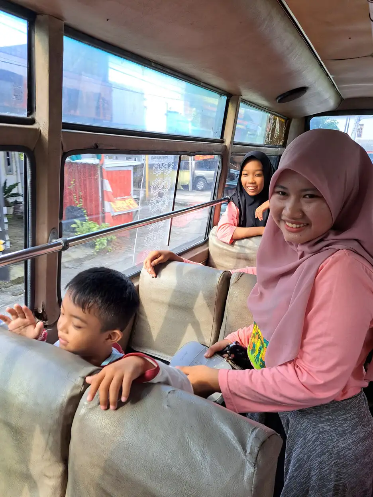
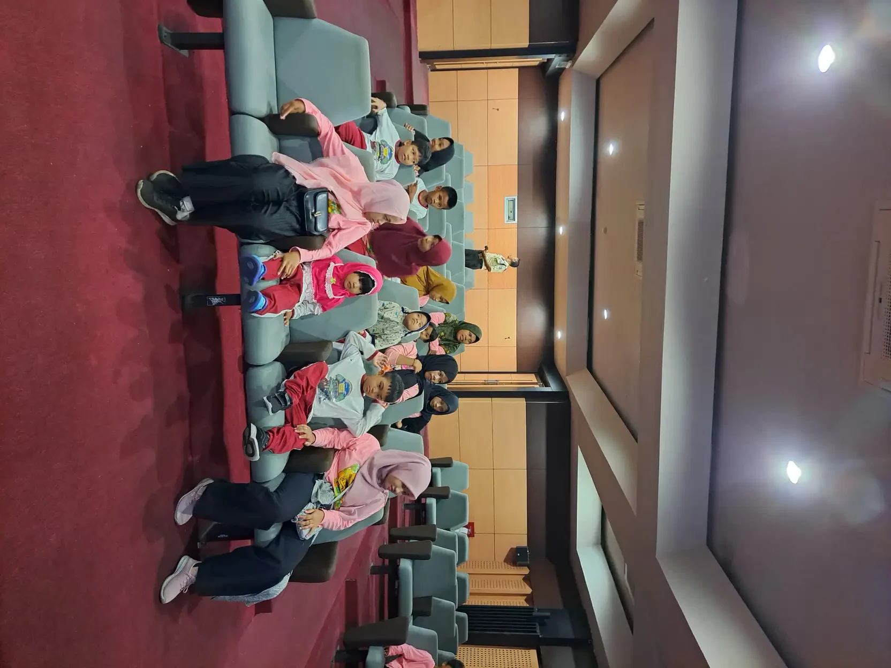

Ringkasan: anak berkebutuhan khusus (ABK) berhak kuliah di perguruan tinggi mana pun yang sesuai minat dan kemampuannya. Persiapannya paling baik dimulai dua sampai tiga tahun sebelum lulus SMA, SMALB, atau Paket C: mengenali kekuatan anak, melatih kemampuan menyampaikan kebutuhan sendiri, menyiapkan dokumen disabilitas, memilih kampus yang punya Unit Layanan Disabilitas, lalu mengajukan akomodasi sejak tahap seleksi.
Banyak orang tua ABK baru memikirkan kuliah ketika anak sudah di kelas 12. Pada titik itu pilihan sering terasa sempit: jadwal seleksi sudah dekat, dokumen belum lengkap, dan anak belum terbiasa menjelaskan kebutuhannya kepada orang asing. Artikel ini membahas langkah persiapan yang bisa dimulai lebih awal, apa yang dijamin aturan untuk mahasiswa penyandang disabilitas, dan bagaimana mengajukan penyesuaian saat seleksi masuk.
Fokus artikel ini adalah transisi dari sekolah ke kampus. Kalau Anda masih mencari gambaran tentang layanan belajar di jenjang sekolah, mulai dari panduan pendidikan khusus dan pendidikan inklusi.
Daftar Isi
- Apakah Anak ABK Bisa Kuliah? Yang Dijamin Aturan
- Linimasa Persiapan dari SMP sampai Kelas 12
- Keterampilan yang Paling Menentukan: Advokasi Diri dan Kemandirian
- Memilih Program Studi dan Kampus
- Jalur Seleksi dan Cara Mengajukan Akomodasi
- Dokumen yang Perlu Disiapkan
- Akomodasi yang Bisa Diminta Selama Kuliah
- Biaya Kuliah dan KIP Kuliah
- Kalau Kuliah Bukan Langkah Berikutnya
- Pertanyaan yang Sering Diajukan
Apakah Anak ABK Bisa Kuliah? Yang Dijamin Aturan
Bisa. Undang-Undang Nomor 8 Tahun 2016 tentang Penyandang Disabilitas Pasal 10 menyebut hak pendidikan penyandang disabilitas mencakup pendidikan bermutu di semua jenis, jalur, dan jenjang pendidikan, secara inklusif maupun khusus, serta hak mendapatkan akomodasi yang layak sebagai peserta didik. Penjelasan pasal yang sama menyebut pendidikan inklusif sebagai belajar bersama peserta didik lain "di sekolah reguler atau perguruan tinggi".
Untuk jenjang kuliah, ada dua kewajiban yang penting diketahui orang tua:
- Unit Layanan Disabilitas (ULD). Pasal 42 ayat (3) UU 8/2016 mewajibkan setiap penyelenggara pendidikan tinggi memfasilitasi pembentukan ULD. Menurut ayat (4), ULD antara lain bertugas mengoordinasikan unit kerja kampus dalam memenuhi kebutuhan mahasiswa penyandang disabilitas, mengawasi pelaksanaan akomodasi yang layak, dan menyediakan layanan konseling. Kampus yang tidak membentuk ULD dapat dikenai sanksi administratif (ayat 7).
- Akomodasi yang layak. Aturan pelaksananya kini Permendikbudristek Nomor 48 Tahun 2023, yang berlaku dari PAUD formal sampai perguruan tinggi. Pasal 15 mewajibkan setiap perguruan tinggi memfasilitasi pembentukan ULD, dan lampirannya merinci bentuk akomodasi per ragam disabilitas.
Perhatikan aturan yang sudah dicabut
Banyak tulisan lama masih mengutip Permenristekdikti Nomor 46 Tahun 2017 tentang pendidikan khusus di perguruan tinggi dan Permendiknas Nomor 70 Tahun 2009 tentang pendidikan inklusif. Menurut database peraturan BPK dan Pasal 43 Permendikbudristek 48/2023, ketentuan keduanya yang terkait pendidikan penyandang disabilitas sudah dicabut. Kalau kampus atau sekolah merujuk aturan lama, Anda bisa menunjukkan aturan yang berlaku sekarang.
Satu hal yang sering membuat orang tua ragu: apakah anak berkebutuhan khusus seperti anak autis atau ADHD termasuk "penyandang disabilitas" dalam aturan ini? Penjelasan Pasal 4 UU 8/2016 menyebut disabilitas mental mencakup disabilitas perkembangan yang berpengaruh pada kemampuan interaksi sosial, "di antaranya autis dan hiperaktif". Sementara lambat belajar dan down syndrome disebut sebagai contoh disabilitas intelektual. Artinya, anak dengan kondisi tersebut tercakup dalam hak akomodasi, selama kebutuhannya dibuktikan dengan dokumen yang diminta.
Linimasa Persiapan dari SMP sampai Kelas 12
Tidak ada linimasa resmi yang berlaku untuk semua anak. Tabel di bawah adalah kerangka kerja yang kami sarankan untuk dibicarakan bersama guru, guru pendamping khusus, dan anak sendiri. Sesuaikan dengan kondisi dan tempo anak.
| Waktu | Fokus | Contoh kegiatan |
|---|---|---|
| SMP sampai kelas 10 | Mengenali minat dan kekuatan | Catat pelajaran dan kegiatan yang membuat anak bertahan lama; mulai libatkan anak dalam rapat program belajarnya |
| Kelas 10 sampai 11 | Advokasi diri dan kemandirian | Anak berlatih menjelaskan kebutuhannya sendiri kepada guru; latihan mengatur jadwal, transportasi, dan uang saku |
| Kelas 11 | Riset program studi dan kampus | Kunjungi laman ULD kampus incaran, tanyakan akomodasi yang pernah diberikan, ikut acara kampus terbuka bila ada |
| Awal kelas 12 | Dokumen | Perbarui surat keterangan disabilitas, minta surat keterangan capaian dari sekolah, siapkan portofolio bila prodi meminta |
| Kelas 12 | Seleksi | Daftar SNBP, UTBK-SNBT, atau seleksi mandiri; ajukan akomodasi sejak formulir pendaftaran |
| Setelah diterima | Registrasi dan orientasi | Hubungi ULD sebelum kuliah dimulai, susun rencana akomodasi semester pertama |
Kenapa mulai sedini SMP? Karena keterampilan yang paling menentukan di kampus, yaitu kemampuan anak mengurus kebutuhannya sendiri, butuh waktu bertahun-tahun untuk terbentuk. Di sekolah, orang tua dan guru biasanya yang mengatur segalanya. Di kampus, dosen dan ULD umumnya berurusan langsung dengan mahasiswa.
Keterampilan yang Paling Menentukan: Advokasi Diri dan Kemandirian
Advokasi diri berarti anak memahami kondisinya, tahu bantuan apa yang membuatnya bisa belajar, dan berani memintanya dengan sopan. Ini berbeda dari sekadar "berani bicara". Anak perlu bisa menjawab tiga pertanyaan sederhana:
- Apa yang sulit bagiku? Misalnya: "Saya sulit fokus di ruangan ramai" atau "Saya butuh waktu lebih lama membaca soal panjang."
- Apa yang membantuku? Misalnya: ruang ujian yang lebih tenang, materi kuliah dikirim lebih awal, atau izin merekam penjelasan dosen.
- Kepada siapa aku memintanya? ULD, dosen pembimbing akademik, atau dosen pengampu mata kuliah.
Latihannya bisa dimulai di rumah dan sekolah. Biarkan anak sendiri yang menyampaikan kebutuhannya ke guru baru, lalu orang tua cukup mendampingi. Untuk anak yang komunikasinya terbatas, latihan bisa memakai kartu tertulis, pesan singkat yang disiapkan bersama, atau alat bantu komunikasi yang sudah biasa ia pakai.
Selain advokasi diri, beberapa keterampilan sehari-hari ikut menentukan apakah anak nyaman di kampus:
- Mengelola jadwal sendiri: membaca jadwal kuliah, memakai pengingat di ponsel, dan tahu apa yang harus dilakukan kalau jadwal berubah.
- Bepergian ke kampus: rute, moda transportasi, dan rencana cadangan. Panduan kami tentang latihan naik transportasi umum bisa menjadi titik awal.
- Mengatur uang saku dan kebutuhan pribadi, terutama bila anak akan tinggal di kos.
- Mengenali tanda kelelahan atau beban sensorik, lalu tahu tempat untuk menenangkan diri.

Memilih Program Studi dan Kampus
Mulailah dari program studi, bukan dari nama kampus. Prodi yang cocok dengan minat dan kekuatan anak membuat motivasinya bertahan saat kuliah terasa berat. Setelah itu, saring kampus dengan pertanyaan praktis berikut:
- Apakah kampus punya ULD yang aktif? Cari laman ULD atau layanan disabilitas di situs kampus, lalu hubungi kontaknya. Tanyakan contoh akomodasi yang pernah diberikan untuk ragam disabilitas yang mirip dengan anak Anda.
- Apakah prodi punya syarat khusus? Beberapa prodi mensyaratkan kemampuan tertentu, misalnya tidak buta warna atau kemampuan fisik untuk praktikum. Syarat ini dicantumkan di laman penerimaan masing-masing kampus, jadi baca sebelum memilih.
- Bagaimana bentuk perkuliahannya? Proporsi teori, praktikum, kerja kelompok, dan magang memengaruhi jenis dukungan yang dibutuhkan.
- Seberapa jauh dari rumah? Untuk semester awal, jarak yang memungkinkan anak pulang atau didampingi sering kali lebih penting daripada peringkat kampus.

Sebagai gambaran, laman layanan disabilitas PMB Universitas Negeri Yogyakarta menyebut UNY ditunjuk Panitia SNPMB sebagai salah satu pusat UTBK untuk peserta penyandang disabilitas di DIY. Laman yang sama mencantumkan ragam disabilitas yang dilayani, termasuk disabilitas intelektual ringan "sesuai persyaratan program studi", dan menegaskan bahwa layanan diberikan berdasarkan kebutuhan peserta, bukan semata jenis disabilitasnya. Kampus lain punya kebijakan masing-masing, jadi selalu cek langsung ke kampus yang Anda incar.
Jalur Seleksi dan Cara Mengajukan Akomodasi
Calon mahasiswa ABK mengikuti jalur seleksi yang sama dengan calon mahasiswa lain. Perbedaannya ada pada penyesuaian (akomodasi) yang bisa diminta selama proses seleksi.
| Jalur | Dasar penilaian | Hal yang perlu diperhatikan peserta disabilitas |
|---|---|---|
| SNBP (seleksi nasional berdasarkan prestasi) | Nilai rapor dan prestasi, didaftarkan lewat sekolah | Pendaftaran lewat sekolah, jadi bicarakan kebutuhan anak dengan sekolah sejak awal dan tanyakan cara menyampaikan kebutuhan akomodasi ke kanal resmi SNPMB |
| UTBK-SNBT (seleksi nasional berdasarkan tes) | Tes berbasis komputer | Pilih lokasi ujian yang melayani peserta disabilitas; peserta tunanetra wajib mengunggah surat pernyataan tunanetra |
| Seleksi mandiri | Ditentukan masing-masing kampus | Pilih opsi peserta disabilitas di formulir, jelaskan akomodasi yang dibutuhkan, unggah dokumen pendukung |
Untuk UTBK-SNBT, informasi umum SNPMB mencantumkan bahwa peserta berkebutuhan khusus tunanetra wajib mengunggah Surat Pernyataan Tuna Netra, dan tahap melengkapi biodata memuat langkah mengunduh serta mengunggah pernyataan tunanetra dan/atau hambatan visual. Persyaratan umumnya antara lain siswa SMA/SMK/MA atau sederajat di kelas terakhir, atau peserta didik Paket C dengan batas umur tertentu. Jadwal dan syarat berubah tiap tahun, jadi selalu cek laman resmi SNPMB untuk tahun yang berjalan.
Untuk seleksi mandiri, contoh alurnya bisa dilihat di laman PMB UNY tadi: peserta mendaftar lewat prosedur yang sama, memilih opsi sebagai peserta penyandang disabilitas, menjelaskan kebutuhan akomodasi, mengunggah dokumen pendukung seperti surat keterangan disabilitas dari rumah sakit, dokter, atau lembaga berwenang, lalu mengikuti verifikasi panitia. Akomodasi yang disebut di laman itu antara lain pendampingan selama ujian, ruang ujian khusus dengan komputer berpembaca layar, dan penempatan ruang yang mudah dijangkau.
Lampiran Permendikbudristek 48/2023 juga menyebut "pemberian afirmasi seleksi masuk di Satuan Pendidikan" sebagai salah satu bentuk akomodasi yang layak, berdasarkan keterangan dokter, dokter spesialis, dan/atau psikolog sesuai ragam disabilitasnya. Bentuk afirmasi di tiap kampus berbeda, jadi tanyakan langsung ke panitia penerimaan.
Dokumen yang Perlu Disiapkan
Dokumen adalah bagian yang paling sering membuat pengajuan akomodasi terlambat. Mulailah mengumpulkannya di awal kelas 12, atau lebih awal kalau pemeriksaan butuh antrean panjang.
- Surat keterangan disabilitas dari dokter, dokter spesialis, psikolog, atau lembaga berwenang, sesuai yang diminta jalur seleksi. Pastikan tanggalnya masih relevan dan isinya menyebut kebutuhan fungsional anak, bukan hanya diagnosis.
- Laporan asesmen atau hasil pemeriksaan terbaru, bila ada. Ini membantu ULD memahami bentuk dukungan yang dibutuhkan.
- Surat keterangan dari sekolah. Lampiran Permendikbudristek 48/2023 menyebut satuan pendidikan dapat mengeluarkan surat keterangan yang menginformasikan ragam disabilitas dan capaian kemampuan peserta didik. Minta ke sekolah sebelum anak lulus.
- Catatan akomodasi yang pernah dipakai di sekolah, misalnya waktu ujian tambahan atau ruang terpisah, beserta seberapa membantu.
- Portofolio bila prodi memintanya, misalnya prodi seni atau olahraga.
- Dokumen umum: NIK, NISN, rapor, ijazah atau surat keterangan siswa kelas 12.
Simpan semua dokumen dalam bentuk pindaian yang rapi dan diberi nama jelas. Anak sebaiknya ikut tahu letak dan isi dokumennya, karena di kampus ia yang akan menyerahkannya ke ULD.
Akomodasi yang Bisa Diminta Selama Kuliah
Lampiran II Permendikbudristek 48/2023 merinci bentuk akomodasi yang layak per ragam disabilitas. Beberapa contoh yang relevan untuk perkuliahan:
| Ragam disabilitas | Contoh akomodasi dalam lampiran |
|---|---|
| Fisik | Aksesibilitas fisik (bidang miring, lift, toilet mudah diakses), penataan ruang kelas, fleksibilitas waktu tugas dan evaluasi, asistensi dalam pembelajaran dan evaluasi |
| Intelektual | Ruang relaksasi, fleksibilitas proses dan bentuk materi pembelajaran, fleksibilitas evaluasi sesuai rekomendasi asesmen |
| Mental (termasuk autisme dan ADHD menurut UU 8/2016) | Ruang relaksasi, akses konseling rutin, fleksibilitas tempat dan waktu evaluasi, materi diterima sebelum pembelajaran, layanan tutorial, fleksibilitas posisi duduk dan waktu istirahat |
| Netra | Naskah braille, soal dalam berkas digital yang bisa dibaca perangkat pembaca layar, pembacaan soal oleh petugas, perpanjangan waktu evaluasi paling sedikit 50 persen untuk ujian dengan braille atau dibacakan |
| Rungu | Juru bahasa isyarat atau juru catat, penyajian materi dalam bentuk visual |
Akomodasi tidak berarti standar kelulusan diturunkan begitu saja. Lampiran itu berulang kali menyebut penyesuaian dilakukan "sesuai dengan rekomendasi hasil asesmen kebutuhan Peserta Didik". Di kampus, asesmen dan rekomendasi ini biasanya dikoordinasikan ULD bersama prodi. Karena itu, hubungi ULD sebelum semester pertama dimulai, jangan menunggu sampai ujian tengah semester.
Di kampus yang ULD-nya masih baru, prosesnya mungkin belum rapi. Permendikbudristek 48/2023 Pasal 41 memberi waktu paling lama tiga tahun bagi ULD yang sudah ada untuk menyesuaikan diri dengan aturan ini. Kalau anak mengalami hambatan, catat tanggal permintaan, siapa yang dihubungi, dan jawabannya, lalu sampaikan secara tertulis ke ULD atau pimpinan prodi.
Biaya Kuliah dan KIP Kuliah
Biaya sering menjadi pertimbangan besar karena keluarga ABK biasanya juga menanggung biaya terapi dan pendampingan. Salah satu bantuan pemerintah untuk biaya kuliah adalah KIP Kuliah. Portal resmi KIP Kuliah menyatakan kelayakan dan tingkat kesejahteraan pendaftar dirujuk melalui Data Tunggal Sosial Ekonomi Nasional (DTSEN), dan pendaftar dapat memeriksa serta memperbarui data desilnya bila ada ketidaksesuaian.
Kami tidak menemukan ketentuan resmi yang menjadikan status disabilitas sebagai jaminan otomatis menerima KIP Kuliah. Jadi siapkan pendaftaran KIP Kuliah seperti calon mahasiswa lain, pastikan data keluarga di DTSEN sudah benar, dan tanyakan ke kampus tujuan tentang beasiswa atau keringanan biaya yang mereka miliki untuk mahasiswa penyandang disabilitas.
Kalau Kuliah Bukan Langkah Berikutnya
Kuliah adalah salah satu pilihan, bukan satu-satunya ukuran keberhasilan. Sebagian anak lebih berkembang lewat pendidikan vokasi, pelatihan kerja, magang, atau usaha keluarga. Sebagian lain butuh jeda satu atau dua tahun untuk memperkuat kemandirian sebelum kuliah. Keputusan terbaik adalah yang melibatkan anak, berdasar pada kekuatannya, dan memberi ruang untuk berubah arah.
Kalau keluarga sedang menimbang jalur kerja, baca juga panduan kami tentang pekerjaan untuk penyandang disabilitas, pilihan pekerjaan untuk orang autis, dan cara mengajarkan kemandirian kepada anak berkebutuhan khusus.
Pendampingan di YUKA
Di Sekolah Inklusi Taruna Imani, Sleman, kami mendampingi keluarga menyiapkan anak untuk langkah setelah sekolah, mulai dari latihan kemandirian sampai berbicara tentang kebutuhannya sendiri. Kalau Anda ingin berdiskusi tentang persiapan anak, hubungi kami lewat halaman kontak.
Pertanyaan yang Sering Diajukan
Apakah anak autis bisa kuliah di universitas negeri?
Bisa. UU 8/2016 menjamin hak pendidikan penyandang disabilitas di semua jenjang, dan penjelasan Pasal 4 menyebut autisme sebagai contoh disabilitas mental. Anak mengikuti jalur seleksi yang sama dan dapat mengajukan akomodasi. Syarat khusus program studi tetap berlaku, jadi cek laman penerimaan kampus.
Kapan sebaiknya persiapan kuliah anak ABK dimulai?
Idealnya dua sampai tiga tahun sebelum lulus, karena keterampilan advokasi diri dan kemandirian butuh waktu. Pengumpulan dokumen dan riset kampus sebaiknya selesai sebelum masa pendaftaran seleksi di kelas 12.
Apa itu Unit Layanan Disabilitas di kampus?
ULD adalah unit yang wajib difasilitasi setiap perguruan tinggi menurut Pasal 42 ayat (3) UU 8/2016 dan Pasal 15 Permendikbudristek 48/2023. Tugasnya antara lain mengoordinasikan akomodasi yang layak, menyediakan konseling, dan memberi pendampingan bagi mahasiswa penyandang disabilitas.
Bagaimana cara meminta akomodasi saat UTBK?
Ikuti alur pendaftaran di laman resmi SNPMB. Untuk peserta tunanetra, SNPMB mewajibkan unggahan surat pernyataan tunanetra. Untuk kebutuhan lain, hubungi kanal bantuan resmi SNPMB dan pusat UTBK yang melayani peserta disabilitas sebelum batas pendaftaran.
Dokumen apa yang paling penting untuk pengajuan akomodasi?
Surat keterangan disabilitas dari dokter, dokter spesialis, psikolog, atau lembaga berwenang, ditambah surat keterangan dari sekolah tentang ragam disabilitas dan capaian kemampuan anak. Catatan akomodasi yang sudah terbukti membantu di sekolah juga berguna bagi ULD.
Apakah penyandang disabilitas otomatis mendapat KIP Kuliah?
Tidak ada ketentuan seperti itu di portal resmi KIP Kuliah yang kami periksa. Kelayakan dirujuk melalui data sosial ekonomi (DTSEN). Daftarlah seperti calon mahasiswa lain dan tanyakan beasiswa khusus ke kampus tujuan.
Apakah orang tua boleh mendampingi anak di kampus?
Kebijakan tiap kampus berbeda. Lampiran Permendikbudristek 48/2023 menyebut asistensi atau pendampingan sebagai bentuk akomodasi untuk ragam disabilitas tertentu, sesuai rekomendasi asesmen. Bicarakan bentuk pendampingan yang dibutuhkan dengan ULD, dan arahkan agar anak makin mandiri dari semester ke semester.
Kesimpulan
Persiapan kuliah anak ABK bukan soal satu formulir di kelas 12, melainkan proses beberapa tahun: membangun kemampuan anak menyampaikan kebutuhannya, mengumpulkan dokumen, memilih kampus dengan ULD yang aktif, dan mengajukan akomodasi sejak seleksi. Aturan yang berlaku saat ini, UU 8/2016 dan Permendikbudristek 48/2023, memberi dasar yang jelas. Yang tersisa adalah menyiapkan anak agar ia sendiri yang memakai hak itu.
Baca Juga Artikel Terkait:
Sumber dan Referensi
- UU Nomor 8 Tahun 2016 tentang Penyandang Disabilitas (Pasal 10, Pasal 42, penjelasan Pasal 4), peraturan.bpk.go.id
- Permendikbudristek Nomor 48 Tahun 2023 tentang Akomodasi yang Layak untuk Peserta Didik Penyandang Disabilitas (Pasal 15, 17, 41, 43, Lampiran II), peraturan.bpk.go.id
- Permenristekdikti Nomor 46 Tahun 2017 (status: dicabut), peraturan.bpk.go.id
- SNPMB: Informasi Umum UTBK-SNBT, snpmb.id
- PMB Universitas Negeri Yogyakarta: Layanan Peserta Disabilitas, pmb.uny.ac.id
- Portal resmi KIP Kuliah, kip-kuliah.kemdiktisaintek.go.id
Catatan: Artikel ini bersifat informasi umum. Jadwal, syarat seleksi, dan kebijakan kampus berubah tiap tahun, jadi selalu cek laman resmi SNPMB dan kampus tujuan. Untuk surat keterangan disabilitas dan rekomendasi akomodasi, konsultasikan dengan dokter, psikolog, atau tenaga profesional yang menangani anak. Isi artikel ini belum ditinjau oleh tenaga profesional eksternal.